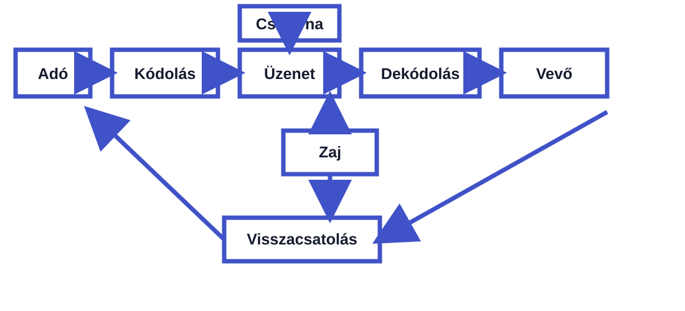

Magyar – tájékoztató kérdés
Kérdés
Melyik kommunikációs tényező az a jelrendszer, amellyel az üzenetet kifejezzük?
Válasz
A kód. Ez lehet nyelvi vagy nem nyelvi jelrendszer, amely segítségével az üzenetet kifejezzük.
GYAKORLATI FELADAT
A kommunikáció tényezői, funkciói és a kérdezés gyakorlati alkalmazása négy tantárgyon keresztül.
A kommunikáció során a feladó kódolja az üzenetet, amely egy csatornán keresztül jut el a vevőhöz. A vevő dekódolja az üzenetet, majd visszacsatolással reagál. A zaj zavarhatja az információ átadását.

2 fős csoportban magyarból, történelemből, matematikából és szakmai tantárgyból egy-egy kérdéstípusnak megfelelő kérdést kell megfogalmazni és megválaszolni.
Kérdés
Melyik kommunikációs tényező az a jelrendszer, amellyel az üzenetet kifejezzük?
Válasz
A kód. Ez lehet nyelvi vagy nem nyelvi jelrendszer, amely segítségével az üzenetet kifejezzük.
Kérdés
Milyen érzést vagy hangulatot fejezhet ki a feladó, amikor egy történelmi eseményről indulatosan beszél?
Válasz
A feladó a saját érzelmeit és hangulatát fejezheti ki. Ez a kifejező, vagyis emotív kommunikációs funkció.
Kérdés
Kérlek, ellenőrizd még egyszer a számítás eredményét!
Válasz
A kérés arra ösztönzi a címzettet, hogy cselekedjen és ellenőrizze az eredményt. Ez a felhívó, vagyis konatív funkció.
Kérdés
Figyelsz? Érthető, amit a feladatról mondok?
Válasz
Ez a kérdés a kapcsolat fenntartását és ellenőrzését szolgálja. Ezért fatikus, vagyis kapcsolattartó funkciójú.
Nem megfelelő nyelvezet, hiányos információ vagy túl sok adat egyszerre.
Szelektív figyelés, előítélet vagy azonnali reagálási kényszer.
Félbeszakítás, kéretlen tanácsok és túlzott önközpontúság.
A visszajelzések hiánya, ismétlődő konfliktusok és érzelmi feszültség jelezheti a problémát.
A jó kérdezés segít pontosítani az információt, ellenőrizni a megértést, fenntartani a kapcsolatot és megfelelő reakciót kiváltani. Fontos, hogy a másik felet végighallgassuk, ne szakítsuk félbe, és a válaszára figyelve adjunk visszajelzést.